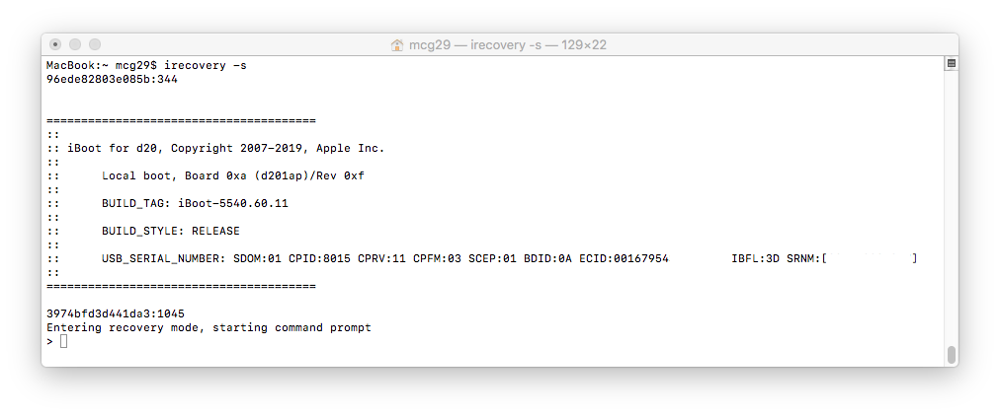

First Steps
Most tools are designed to be used on MacOS, however if compiled from source they may be able to run on other operating systems.
Download and compile:
img4lib (img4) by @xerub
img4tool by @Tihmstar
iBoot64Patcher by @Tihmstar
tsschecker by @Tihmstar
Kernel64Patcher by @Ralph0045
irecovery from Libimobiledevice
Any Utility to place the device into pwned DFU mode.
For example:
The target firmware (iOS version) which can be found here
Apple device software comes in the form of zip files with a .ipsw extension. "ipsw" is an abbreviation for iPhone/iPod/iPad (ip) and software (sw).
SHSH(2) (apticket) files
SHSH signatures are required in order to properly build img4 files that the BootROM will accept from pwned DFU mode. Unless you have them already, you can save them with tsschecker (or other public tools.)
Note: ticket version does not have to match target iBoot version.
tsschecker -d iPhoneX,X -l -e ECID -B boardconfig -l -s
If you do not know your ECID or boardconfig, connect the device in recovery mode and execute:
irecovery -s
which will give output similar to this: 
After the string "ECID:" will be the device's ECID in hex, and Board Configuration (boardconfig) will be in parentheses after "Local Boot" (d201ap) in this case.
Next, convert your saved shsh2 file for your device to raw IM4M with img4tool. This file will be critical for signing components later on:
img4tool -e -s *.shsh2 -m IM4M